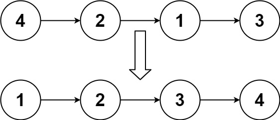
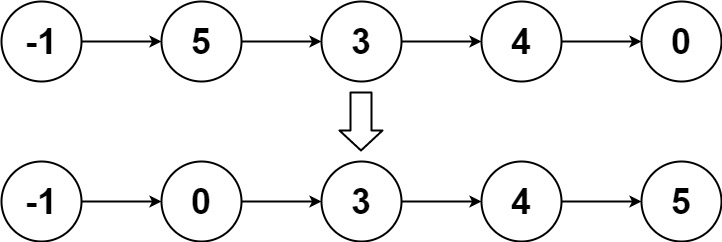
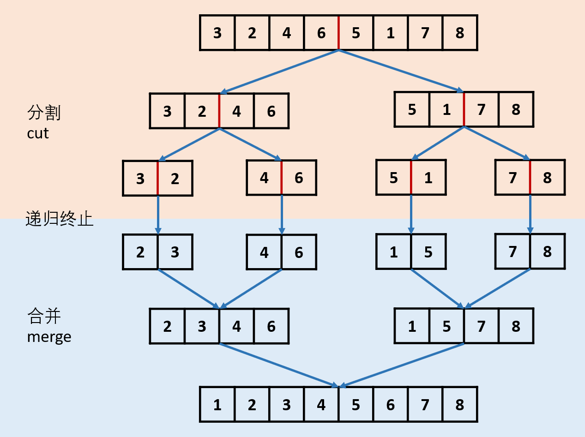

题面
给你链表的头结点 head ，请将其按 升序 排列并返回 排序后的链表 。
示例 1：

输入： head = [4,2,1,3]
输出：[1,2,3,4]示例 2：

输入： head = [-1,5,3,4,0]
输出：[-1,0,3,4,5]示例 3：
输入： head = []
输出：[]提示：
- 链表中节点的数目在范围
[0, 5 * 104]内 -105 <= Node.val <= 105
进阶： 你可以在 O(n log n) 时间复杂度和常数级空间复杂度下，对链表进行排序吗？
思路
- 链表的归并排序，三步：分 → 治 → 合

图 归并排序流程图
- 分：快慢指针找偏左中点，切断链表
- 用
slow, fast = head, head.next（fast 从 head.next 起步）找到偏左的中点 - 为什么要偏左？因为我们要在中点处切断：
mid = slow.next（右半段头），slow.next = None（切断）。如果用fast = head拿到偏右中点，就得找它的前驱才能切，麻烦 - 回顾快慢指针找中点的两种起步方式：
slow, fast = head, head：偶数返回偏右，奇数返回正中间slow, fast = head, head.next：偶数返回偏左，奇数返回正中间- 治：递归排序两半
left = self.sortList(head)：排序左半段right = self.sortList(mid)：排序右半段- 返回值就是各自排好序的链表头
- 合：合并两个有序链表（和第 21 题完全一样）
- 哨兵节点 + while 比较 + 接上剩余部分
- 终止条件：`if not head or not head.next: return head`
head is None：空链表，返回 None。这只在最外层调用输入为空时触发，内部递归不会产生空链表（切出来的两半至少各一个节点）head.next is None：只剩一个节点，已经有序，直接返回。这是内部递归真正的终止条件- 为什么有两个 return？
return head（终止条件）：递归到底时走这条路，告诉上一层"这一个节点就是排好的结果"return dum.next（合并后）：正常分治完成后走这条路，告诉上一层"合并好的有序链表头在这里"- 每次
self.sortList(...)调用最终都会走到其中一个 return，上一层的left/right接到的就是排好序的链表头 - 这道题综合了前面学过的多个技巧：
- 快慢指针找中点（第 876 题）
- 合并两个有序链表（第 21 题）
- 递归的终止条件判断（返回 head 而非 None，因为还有节点需要保留）
代码实现
class Solution:
def sortList(self, head: Optional[ListNode]) -> Optional[ListNode]:
if not head or not head.next:
return head
slow, fast = head, head.next
while fast and fast.next:
fast = fast.next.next
slow = slow.next
mid = slow.next # 作为新的链表的头
slow.next = None # 截断这个链表
left, right = self.sortList(head), self.sortList(mid)
h = dum = ListNode(0)
while left and right:
if left.val < right.val:
h.next = left
left = left.next
else:
h.next = right
right = right.next
h = h.next
if left:
h.next = left
elif right:
h.next = right
return dum.next- 复杂度：时间 O(n log n)，空间 O(log n)（递归调用栈深度）
TODO：迭代法（自底向上归并，空间 O(1)）暂时跳过，以后有机会再补充